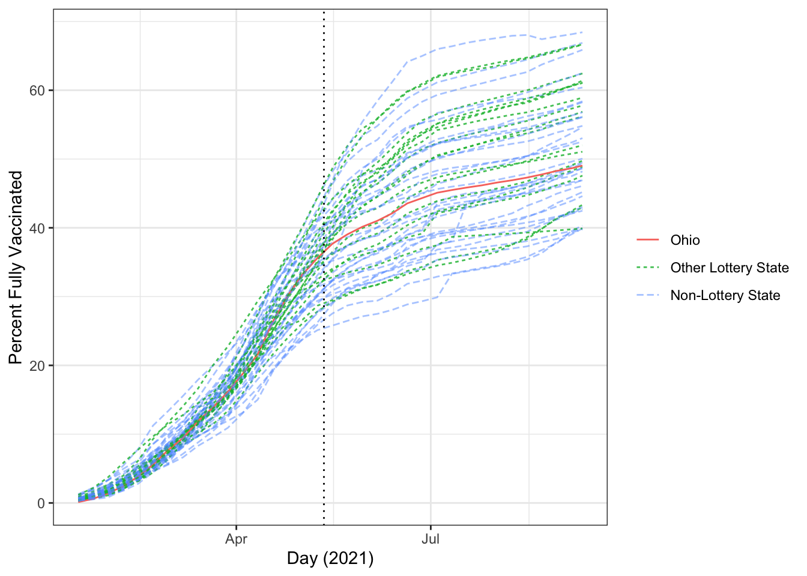
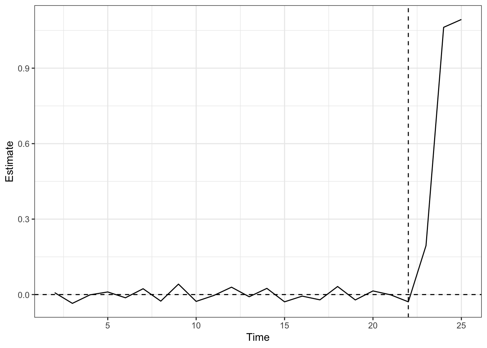
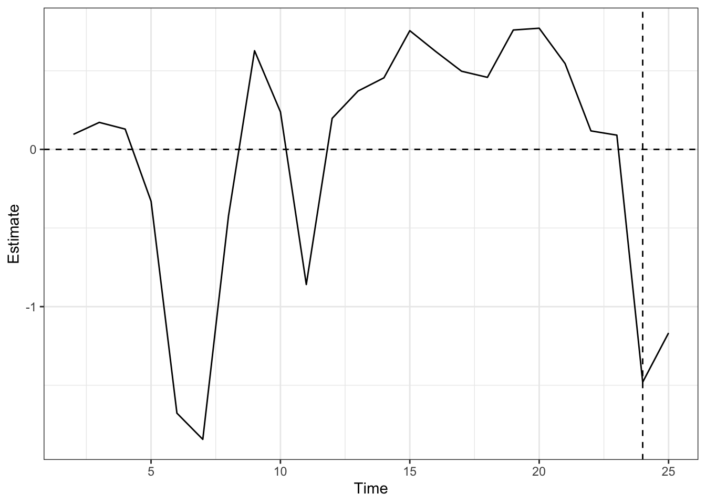

load(file="../data/lottery_lang.Rda")Synthetic Control Analysis: COVID-19 Vaccine Lotteries
Setting and Data
There are several published analyses of the effect of COVID-19 vaccine lotteries in the U.S. We use the data and analysis based on that by Lang et al. (2023). The replication files that are used are available through Harvard Dataverse.
Fuller et al. (2022) conducted a multiple-state analysis using the synthetic control, and have data available on Harvard Dataverse as well. Other analyses include Sehgal (2021) and Brehm et al. (2022).
Focusing on the Ohio Vax-A-Million lottery, we explore whether the lottery incentive, which was announced on May 12, 2021, had a noticeable impact on Ohio’s vaccination rates. The outcome considered is the percentage of the adult population fully vaccinated for COVID-19; note that the lottery only required a first dose for entry.
The outcome data were obtained by Lang et al. from Our World In Data’s database, which draws from CDC reports. The relevant data for our analyses are in lottery_lang.Rda. lang_0624 contains weekly case, vaccination, and death numbers by state, along with indicators and week numbers for any states that implemented their own lottery. These data are complete through late June 2021 (used in the main analysis in the publication), while lang_0912 extends the data through mid-September. lang_ann_dates has announcement dates and notes on lotteries in various states. Note that the data used by Fuller et al. are available in lottery_fuller.Rda for comparison.
First, load the data into R.
Libraries
Again, we will use tidyverse and knitr for general coding. Several packages are available for synthetic control fitting, including: Synth, developed by the original authors of Abadie et al. (2010); gsynth, which implements the generalized SC method; and microsynth, which allows for disaggregated, micro-level data. We will use two others:
tidysynth, which has a more user-friendly, tidyverse-style implementation of SC; andaugsynth, which additionally allows for Augmented SC (to be discussed later) and staggered adoption SC. For the most recent version ofR, this has to be installed from GitHub using thedevtoolspackage.
We now load the required libraries.
## If you have not installed these packages before,
## run the following line:
# install.packages(c("tidysynth","devtools"))
## Either way, require the libraries:
require(tidyverse)
require(knitr)
require(tidysynth)
require(devtools)
## If augsynth has not yet been installed, run the following line:
# devtools::install_github("ebenmichael/augsynth")
require(augsynth)Graphical Exploration
We begin by plotting the time series for visual inspection. First, we plot the percent fully vaccinated over time, up to late June 2021.
## We first save the annnouncement date for Ohio's lottery:
Ohio_ann <- lang_ann_dates %>% dplyr::filter(state=="OH") %>%
pull(lott_date)
## Plot time series of mandates themselves:
#| fig-cap: "Plot of fully vaccinated percentages by state and lottery status, January–June 2021"
#| fig-alt: "A line plot with line for each state over the time range specified. Ohio is highlighted and generally in the middle of the range."
ggplot(data=lang_0624,
mapping=aes(group=state,linetype=type,color=type,alpha=type,
x=last_day,y=people_fully_vaccinated_per_hundred)) +
scale_alpha_manual(name=NULL, breaks=c("Ohio","Other Lottery State","Non-Lottery State"),
values=c(1,0.8,0.5)) +
geom_line() + theme_bw() +
geom_vline(xintercept=Ohio_ann, linetype="dotted") +
labs(x="Day (2021)", y="Percent Fully Vaccinated",
linetype=NULL,color=NULL)We can do the same with the larger data set to see if there are later time patterns that should be explored.
ggplot(data=lang_0912,
mapping=aes(group=state,linetype=type,color=type,alpha=type,
x=last_day,y=people_fully_vaccinated_per_hundred)) +
scale_alpha_manual(name=NULL, breaks=c("Ohio","Other Lottery State","Non-Lottery State"),
values=c(1,0.8,0.5)) +
geom_line() + theme_bw() +
geom_vline(xintercept=Ohio_ann, linetype="dotted") +
labs(x="Day (2021)", y="Percent Fully Vaccinated",
linetype=NULL,color=NULL)
We can also plot Ohio versus the average outcome of the other states, grouped by whether they had a lottery.
## Create data set that averages across states within each group:
lang_avg <- lang_0624 %>% group_by(type,week,last_day) %>%
dplyr::summarize(full_vax_avg=mean(people_fully_vaccinated_per_hundred,
na.rm=TRUE))`summarise()` has grouped output by 'type', 'week'. You can override using the
`.groups` argument.ggplot(data=lang_avg,
mapping=aes(linetype=type,color=type,alpha=type,
x=last_day,y=full_vax_avg)) +
geom_line(linewidth=1.3) + theme_bw() +
scale_alpha_manual(name=NULL,
breaks=c("Ohio","Other Lottery State",
"Non-Lottery State"),
labels=c("Ohio","Other Lottery States (Mean)",
"Non-Lottery States (Mean)"),
values=c(1,0.8,0.5)) +
scale_linetype_manual(name=NULL,
breaks=c("Ohio","Other Lottery State",
"Non-Lottery State"),
labels=c("Ohio","Other Lottery States (Mean)",
"Non-Lottery States (Mean)"),
values=c("solid","dotted","dashed")) +
scale_color_manual(name=NULL,
breaks=c("Ohio","Other Lottery State",
"Non-Lottery State"),
labels=c("Ohio","Other Lottery States (Mean)",
"Non-Lottery States (Mean)"),
values=c("red","forestgreen","blue")) +
geom_vline(xintercept=Ohio_ann, linetype="dotted") +
labs(x="Day (2021)", y="Percent Fully Vaccinated")Discussion Questions
Does the above plot indicate that parallel trends would be reasonable?
On visual inspection, does it appear that the lottery was effective?
Synthetic Control
Fit Model
We will fit the synthetic control for Ohio, using only non-lottery states as the potential control units. For now, we will use only the pre-intervention time periods as predictors, ignoring any other covariates, and optimize the fit over the full pre-intervention window. We use the synthetic_control function from the tidysynth package. Note that this may take a minute or two to run.
## Conduct SC analysis for Ohio, excluding other lottery states:
synth_ohio <- lang_0624 %>% dplyr::filter(type != "Other Lottery State") %>%
## initialize SC object by specifying outcome, unit variable, time variable,
### and when/where intervention turns on:
synthetic_control(outcome=people_fully_vaccinated_per_hundred,
unit=state,
time=centered_week,
i_unit="OH",
i_time=0,
generate_placebos=T) %>%
## create predictors for SC model:
generate_predictor(time_window=-17,lag17=people_fully_vaccinated_per_hundred) %>%
generate_predictor(time_window=-16,lag16=people_fully_vaccinated_per_hundred) %>%
generate_predictor(time_window=-15,lag15=people_fully_vaccinated_per_hundred) %>%
generate_predictor(time_window=-14,lag14=people_fully_vaccinated_per_hundred) %>%
generate_predictor(time_window=-13,lag13=people_fully_vaccinated_per_hundred) %>%
generate_predictor(time_window=-12,lag12=people_fully_vaccinated_per_hundred) %>%
generate_predictor(time_window=-11,lag11=people_fully_vaccinated_per_hundred) %>%
generate_predictor(time_window=-10,lag10=people_fully_vaccinated_per_hundred) %>%
generate_predictor(time_window=-9,lag09=people_fully_vaccinated_per_hundred) %>%
generate_predictor(time_window=-8,lag08=people_fully_vaccinated_per_hundred) %>%
generate_predictor(time_window=-7,lag07=people_fully_vaccinated_per_hundred) %>%
generate_predictor(time_window=-6,lag06=people_fully_vaccinated_per_hundred) %>%
generate_predictor(time_window=-5,lag05=people_fully_vaccinated_per_hundred) %>%
generate_predictor(time_window=-4,lag04=people_fully_vaccinated_per_hundred) %>%
generate_predictor(time_window=-3,lag03=people_fully_vaccinated_per_hundred) %>%
generate_predictor(time_window=-2,lag02=people_fully_vaccinated_per_hundred) %>%
generate_predictor(time_window=-1,lag01=people_fully_vaccinated_per_hundred) %>%
## generate SC weights:
generate_weights(optimization_window=(-17):(-1),
margin_ipop = .02,sigf_ipop = 7,bound_ipop = 6) %>%
## run SC:
generate_control()The synth_ohio object contains all of the information about the fit. tidysynth provides many functions to pull the results for inspection.
Inspect Fit
We can investigate the weights given to different control units and variables:
## Pull weights and print in descending order
synth_ohio %>% grab_unit_weights() %>%
dplyr::filter(weight > 0.001) %>% dplyr::arrange(desc(weight))# A tibble: 8 × 2
unit weight
<chr> <dbl>
1 KS 0.256
2 WI 0.192
3 VA 0.173
4 GA 0.168
5 IA 0.0664
6 HI 0.0607
7 PA 0.0561
8 CT 0.0288## Plot the weights for control units and variables.
#| fig-cap: "Control unit and variable weights for synthetic control fit of Ohio's fully vaccinated percentage prior to the lottery implementation, May 12, 2021."
#| fig-alt: "Left: bar plot of control unit weights. The positive weights are only for Kansas (0.256), Wisconsin (0.192), Virginia (0.173), Georgia (0.168), Iowa (0.066), Hawaii (0.061), Pennsylvania (0.056), and Connecticut (0.029). Right: bar plot of variable weights, from lag01 down to lag17. The weight on lag01 is above 0.20, falling roughly exponentially to about 0 for lag17."
## Plot weights on control units and variables:
synth_ohio %>% plot_weights()The top four control states by weight are Kansas, Wisconsin, Viriginia, and Georgia. Do these seem reasonable? The variables are given weight in reverse chronological order: does this make sense for minimizing pre-intervention MSPE?
We can also examine the pre-intervention fit directly between true Ohio, synthetic Ohio, and the average of the donor pool.
## Examine fit:
synth_ohio %>% grab_balance_table()# A tibble: 17 × 4
variable OH synthetic_OH donor_sample
<chr> <dbl> <dbl> <dbl>
1 lag17 0.12 0.362 0.554
2 lag16 0.61 0.775 1.09
3 lag15 1.4 1.43 1.88
4 lag14 2.44 2.41 2.96
5 lag13 3.83 3.76 4.33
6 lag12 5.56 5.71 6.19
7 lag11 7.67 7.69 7.91
8 lag10 9.44 9.50 9.75
9 lag09 11.9 11.8 12.0
10 lag08 13.9 13.8 14.0
11 lag07 16.1 16.1 16.3
12 lag06 18.8 18.8 19.2
13 lag05 21.6 22.2 22.6
14 lag04 26.3 26.1 25.9
15 lag03 30.1 29.8 28.9
16 lag02 33.2 33.0 31.6
17 lag01 35.6 35.8 34.1 Plot Results
We can plot both the observed and synthetic time series themselves, and the gap between them.
synth_ohio %>% plot_trends() +
labs(x="Weeks from Lottery Announcement",
y="Percent Fully Vaccinated",
title=NULL) +
theme_bw()
synth_ohio %>% plot_differences() +
labs(x="Weeks from Lottery Announcement",
y="Difference in Percent Fully Vaccinated, Observed–Synthetic",
title=NULL) +
theme_bw()Inference
Placebo in-space tests are conducted by default in synthetic_control and can be plotted. The default plot prunes those with pre-intervention square root of the MSPE values above twice the value for the actual analysis, but this can be turned off with prune=FALSE.
synth_ohio %>% plot_placebos() +
labs(x="Weeks from Lottery Announcement",
y="Difference in Percent Fully Vaccinated, Observed–Synthetic",
title=NULL) +
theme_bw()
synth_ohio %>% plot_placebos(prune=FALSE) +
labs(x="Weeks from Lottery Announcement",
y="Difference in Percent Fully Vaccinated, Observed–Synthetic",
title=NULL) +
theme_bw()One measure of the reliability of the results is to compare the post-intervention MSPE to the pre-intervention MSPE. The result for the actual analysis can be compared to the distribution of the placebo analyses.
synth_ohio %>% plot_mspe_ratio() +
labs(title=NULL) +
theme_bw()An exact p-value can be computed from this distribution, by observing how many control units have as or more extreme ratios. This is done in the fit function and can be accessed using grab_significance.
## Get all pre- and post-intervention MSPEs, ratios, and ranks:
synth_ohio %>% grab_significance()# A tibble: 33 × 8
unit_name type pre_mspe post_mspe mspe_ratio rank fishers_exact_pvalue
<chr> <chr> <dbl> <dbl> <dbl> <int> <dbl>
1 NH Donor 0.331 111. 336. 1 0.0303
2 NE Donor 0.0645 16.4 254. 2 0.0606
3 KS Donor 0.139 19.2 138. 3 0.0909
4 ND Donor 0.309 42.5 138. 4 0.121
5 VT Donor 0.301 34.5 115. 5 0.152
6 VA Donor 0.0463 3.98 85.9 6 0.182
7 WI Donor 0.0560 3.80 67.8 7 0.212
8 MO Donor 0.0329 2.09 63.5 8 0.242
9 IN Donor 0.168 9.83 58.3 9 0.273
10 FL Donor 0.0689 3.58 51.9 10 0.303
# ℹ 23 more rows
# ℹ 1 more variable: z_score <dbl>## Get pre- and post-intervention MSPEs, ratio, and p-value
### for actual treated unit(s) only:
synth_ohio %>% grab_significance() %>%
dplyr::filter(type=="Treated")# A tibble: 1 × 8
unit_name type pre_mspe post_mspe mspe_ratio rank fishers_exact_pvalue
<chr> <chr> <dbl> <dbl> <dbl> <int> <dbl>
1 OH Treated 0.0488 1.32 27.0 12 0.364
# ℹ 1 more variable: z_score <dbl>A similar exact p-value can be computed using any other estimator. We can get this by pulling the results at each time point using grab_synthetic_control(). We then compare the actual estimate to the placebo estimates.
## Pull the synthetic control results for each time point:
SC_res <- synth_ohio %>% grab_synthetic_control(placebo=TRUE) %>%
mutate(diff=real_y-synth_y)
SC_res# A tibble: 792 × 6
.id .placebo time_unit real_y synth_y diff
<chr> <dbl> <dbl> <dbl> <dbl> <dbl>
1 OH 0 -17 0.12 0.362 -0.242
2 OH 0 -16 0.61 0.775 -0.165
3 OH 0 -15 1.4 1.43 -0.0346
4 OH 0 -14 2.44 2.41 0.0294
5 OH 0 -13 3.83 3.76 0.0732
6 OH 0 -12 5.56 5.71 -0.149
7 OH 0 -11 7.67 7.69 -0.0216
8 OH 0 -10 9.44 9.50 -0.0578
9 OH 0 -9 11.9 11.8 0.0746
10 OH 0 -8 13.9 13.8 0.0233
# ℹ 782 more rows## For each time period, compute a permutation p-value
time_an <- function(time) {
SC_res_time <- SC_res %>% dplyr::filter(time_unit==time)
Est <- SC_res_time %>% dplyr::filter(.placebo==0) %>% pull(diff)
P.Val <- mean(abs(SC_res_time %>% pull(diff)) >= abs(Est))
return(c(time_unit=time,estimate=Est,p.value=P.Val))
}
by_time_res <- as_tibble(t(sapply(X=unique(SC_res %>% pull(time_unit)),
FUN=time_an)))
by_time_res# A tibble: 24 × 3
time_unit estimate p.value
<dbl> <dbl> <dbl>
1 -17 -0.242 0.121
2 -16 -0.165 0.576
3 -15 -0.0346 0.939
4 -14 0.0294 0.970
5 -13 0.0732 0.970
6 -12 -0.149 0.667
7 -11 -0.0216 0.939
8 -10 -0.0578 0.848
9 -9 0.0746 0.848
10 -8 0.0233 1
# ℹ 14 more rowsWe can plot these placebo test p-values as well:
ggplot(data=by_time_res) +
geom_point(mapping=aes(x=time_unit, y=p.value), size=1.5) +
theme_bw() +
geom_hline(yintercept=0.05, color="red",
linetype="dotted", size=1.3) +
geom_vline(xintercept=0, linetype="dotted",
linewidth=1.3) +
scale_y_continuous(limits=c(0,1), expand=expansion(),
breaks=seq(0,1,by=0.2)) +
labs(title=NULL,
x="Weeks from Lottery Announcement",
y="Placebo Test P-Values")Warning: Using `size` aesthetic for lines was deprecated in ggplot2 3.4.0.
ℹ Please use `linewidth` instead.Discussion Questions
How would you interpret these results?
Would other specifications (outcomes, scales, etc.) be more convincing or conducive to answering the question?
Do the key assumptions for SC seem reasonable here? Why or why not?
Additional Analysis: Incorporating Covariates
We can try another specification that incorporates some covariates other than the pre-intervention outcome itself. We will incorporate total COVID-19 cases and deaths and average daily vaccinations (per million population) in the week prior to the announcement, as well as the average weekly case and death rates in the prior month. To avoid overfitting, we will average together every four weeks of pre-intervention outcome data as covariates, but optimize covariate weights on the full pre-treatment trajectory.
## Create synthetic control fit with covariates:
synth_oh_cov <- lang_0624 %>% dplyr::filter(type != "Other Lottery State") %>%
## initialize SC object by specifying outcome, unit variable, time variable,
### and when/where intervention turns on:
synthetic_control(outcome=people_fully_vaccinated_per_hundred,
unit=state,
time=centered_week,
i_unit="OH",
i_time=0,
generate_placebos=T) %>%
## create predictors for SC model:
### four-week groups for outcome:
generate_predictor(time_window=-17:-14,lag17_14=mean(people_fully_vaccinated_per_hundred,
na.rm=TRUE)) %>%
generate_predictor(time_window=-13:-10,lag13_10=mean(people_fully_vaccinated_per_hundred,
na.rm=TRUE)) %>%
generate_predictor(time_window=-9:-6,lag9_6=mean(people_fully_vaccinated_per_hundred,
na.rm=TRUE)) %>%
generate_predictor(time_window=-5:-2,lag5_2=mean(people_fully_vaccinated_per_hundred,
na.rm=TRUE)) %>%
### outcome, case rate, death rate, and vaccination rate in week prior:
generate_predictor(time_window=-1,
lag01=people_fully_vaccinated_per_hundred,
total_cases=tot_cases_per_million,
total_deaths=tot_death_per_million,
vax_rate=daily_vaccinations_per_million) %>%
### four previous week average for cases and deaths:
generate_predictor(time_window=-5:-2,
recent_cases=mean(new_case_per_million,
na.rm=TRUE),
recent_deaths=mean(new_death_per_million,
na.rm=TRUE)) %>%
## generate SC weights on same optimization window:
generate_weights(optimization_window=-17:-1,
margin_ipop = .02,sigf_ipop = 7,bound_ipop = 6) %>%
## run SC:
generate_control()
### Examine fit and results:
synth_oh_cov %>% plot_weights()synth_oh_cov %>% grab_balance_table()# A tibble: 10 × 4
variable OH synthetic_OH donor_sample
<chr> <dbl> <dbl> <dbl>
1 lag17_14 1.14 1.21 1.62
2 lag13_10 6.62 6.64 7.05
3 lag9_6 15.2 15.2 15.4
4 lag5_2 27.8 27.8 27.2
5 lag01 35.6 35.6 34.1
6 total_cases 92694. 110433. 102717.
7 total_deaths 1662. 1665. 1637.
8 vax_rate 36997 38907. 39114.
9 recent_cases 1091. 902. 1159.
10 recent_deaths 13.6 12.0 10.6 synth_oh_cov %>% plot_trends()synth_oh_cov %>% plot_differences()synth_oh_cov %>% plot_placebos()synth_oh_cov %>% grab_significance() %>%
dplyr::filter(type=="Treated")# A tibble: 1 × 8
unit_name type pre_mspe post_mspe mspe_ratio rank fishers_exact_pvalue
<chr> <chr> <dbl> <dbl> <dbl> <int> <dbl>
1 OH Treated 0.0535 0.0127 0.237 33 1
# ℹ 1 more variable: z_score <dbl>This specification has a slightly higher pre-intervention MSPE (0.053 compared to 0.049 in the initial specification), but gives an estimated effect nearly indistinguishable from 0. The control unit weights are somewhat changed, but the variable weights still place the vast majority of weight on pre-intervention outcomes.
Augmented Synthetic Control
Using augsynth Function
We can re-fit the Ohio SC analysis using the augsynth function from the augsynth package. By default this package uses all pre-treatment outcome variables as the predictors.
### First, create a dataset with a treatment indicator:
OH_data <- lang_0624 %>%
dplyr::filter(type2 %in% c("Ohio","Non-Lottery State")) %>%
mutate(treated=if_else(state=="OH" & rel_week >= 0,1,0))
### Then, run the augsynth function:
OH_as <- augsynth(form=people_fully_vaccinated_per_hundred~treated, # outcome~treatment
unit=stateF, # units, as a factor variable
time=week, # time period variable
data=OH_data, # data set
progfunc="None", # fits without any outcome model
scm=TRUE, # fits with SC weighting
fixedeff=FALSE) # fits without de-meaning/interceptsOne outcome and one treatment time found. Running single_augsynth.## Prints average ATT estimate in post-intervention periods:
OH_as
Call:
single_augsynth(form = form, unit = !!enquo(unit), time = !!enquo(time),
t_int = t_int, data = data, progfunc = "None", scm = TRUE,
fixedeff = FALSE)
Average ATT Estimate: -1.024## Prints estimate for each time period with conformal inference CI:
summary(OH_as)
Call:
single_augsynth(form = form, unit = !!enquo(unit), time = !!enquo(time),
t_int = t_int, data = data, progfunc = "None", scm = TRUE,
fixedeff = FALSE)
Average ATT Estimate (p Value for Joint Null): -1.02 ( 0.7 )
L2 Imbalance: 0.868
Percent improvement from uniform weights: 72%
Avg Estimated Bias: NA
Inference type: Conformal inference
Time Estimate 95% CI Lower Bound 95% CI Upper Bound p Value
19 -0.355 -2.498 1.788 0.575
20 -0.837 -2.980 1.306 0.493
21 -0.961 -3.104 1.182 0.494
22 -1.257 -3.400 0.887 0.519
23 -1.272 -3.415 0.871 0.721
24 -1.220 -3.363 0.923 0.737
25 -1.266 -3.409 0.878 0.787We can then compare the original SC fit from the tidysynth package to the augsynth fit with SC on but outcome model and fixed effects off. Note that the augsynth plot calls can take a minute to run.
## The original SC fit from the tidysynth package:
#| fig-cap: "Time series of the difference, Observed – Synthetic Ohio, in percent fully vaccinated rate by week (centered at lottery announcement date, May 12, 2021)."
#| fig-alt: "Line plot that fluctuates near 0 from Week -17 to -6, is at -0.6 at Week -5, between -0.25 and 0.3 from Weeks -4 to -2, and then decreases steadily to -1.25 at Week 3 and stays near there until Week 6."
synth_ohio %>% plot_differences() +
labs(x="Weeks from Lottery Announcement",
y="Difference in Percent Fully Vaccinated, Observed–Synthetic",
title=NULL) +
theme_bw()
## The new SC fit from the augsynth package:
#| fig-cap: "Time series of the difference, Observed – Synthetic Ohio, in percent fully vaccinated rate by week, starting from the week ending 1/17/21."
#| fig-alt: "Line plot that is the same as the previous plot, except the x-axis goes from 0 to 25, with a vertical line at 19."
plot(OH_as,
inf=FALSE) # Suppresses plotting of conformal inference CIsThese plots give the same results!
In both cases, the pre-treatment fit is fairly good but not exact. We can alter the options to see different results.
We can try a ridge outcome model first:
### Run the augsynth fit with a ridge outcome model and SC
OH_as_r <- augsynth(form=people_fully_vaccinated_per_hundred~treated, # outcome~treatment
unit=stateF, # units, as a factor variable
time=week, # time period variable
data=OH_data, # data set
progfunc="Ridge", # fits with ridge outcome model
scm=TRUE, # fits with SC weighting
fixedeff=FALSE) # fits without de-meaning/interceptsOne outcome and one treatment time found. Running single_augsynth.## Prints average ATT estimate in post-intervention periods:
OH_as_r
Call:
single_augsynth(form = form, unit = !!enquo(unit), time = !!enquo(time),
t_int = t_int, data = data, progfunc = "Ridge", scm = TRUE,
fixedeff = FALSE)
Average ATT Estimate: -1.037## The ridge-adjusted SC fit from the augsynth package:
#| fig-cap: "Time series of the difference, Observed – Ridge-adjusted Synthetic Ohio, in percent fully vaccinated rate by week, starting from the week ending 1/17/21."
#| fig-alt: "Line plot that is very similar to the previous plot."
plot(OH_as_r,
inf=FALSE) # Suppresses plotting of conformal inference CIs
This is very similar to the previous fit. We can try adding unit fixed effects (de-mean or intercept-shifted SC) instead:
### Run the augsynth fit with fixed effects and no outcome model
OH_as_fe <- augsynth(form=people_fully_vaccinated_per_hundred~treated, # outcome~treatment
unit=stateF, # units, as a factor variable
time=week, # time period variable
data=OH_data, # data set
progfunc="None", # fits without outcome model
scm=TRUE, # fits with SC weighting
fixedeff=TRUE) # fits with de-meaning/interceptsOne outcome and one treatment time found. Running single_augsynth.## Prints average ATT estimate in post-intervention periods:
OH_as_fe
Call:
single_augsynth(form = form, unit = !!enquo(unit), time = !!enquo(time),
t_int = t_int, data = data, progfunc = "None", scm = TRUE,
fixedeff = TRUE)
Average ATT Estimate: -1.739## The de-meaned SC fit from the augsynth package:
#| fig-cap: "Time series of the difference, Observed – de-meaned Synthetic Ohio, in percent fully vaccinated rate by week, starting from the week ending 1/17/21."
#| fig-alt: "Line plot that fluctuates near 0, never exceeding 0.5 in either direction, from Week 0 to 18, and then steadily decreases to around -2 in Week 22 and stays around there through Week 25."
plot(OH_as_fe,
inf=FALSE) # Suppresses plotting of conformal inference CIs
Some of the fluctuations are smoothed out here, as the SC fit is just matching the time trend without needing to match the level of the pre-intervention outcome. This produces a smoother and larger estimate of the intervention effect. However, this requires a different assumption: that matching de-meaned outcomes pre-intervention leads to stable weights.
Analysis of Other States
As we saw, both New Mexico and Maine implemented lotteries, but may be outside of the “convex hull” condition required for SC.
ggplot(data=lang_0624,
mapping=aes(group=state, linetype=type2, color=type2,
alpha=type2, linewidth=type2,
x=last_day,y=people_fully_vaccinated_per_hundred)) +
scale_alpha_manual(name=NULL, breaks=c("Ohio","New Mexico","Maine",
"Other Lottery State",
"Non-Lottery State"),
values=c(1,1,1,0.5,0.8)) +
scale_linewidth_manual(name=NULL, breaks=c("Ohio","New Mexico","Maine",
"Other Lottery State",
"Non-Lottery State"),
values=c(1.3,1.3,1.3,1,1)) +
geom_line() + theme_bw() +
geom_vline(data=lang_0624 %>%
dplyr::filter(type2 %in% c("Ohio","New Mexico","Maine"),
rel_week==0),
mapping=aes(xintercept=lott_date, group=type2, color=type2),
linetype="dotted") +
labs(x="Day (2021)", y="Percent Fully Vaccinated",
linetype=NULL,color=NULL)
We can create data sets for both New Mexico and Maine, and then fit various SC models.
## Create data set for New Mexico as treated unit:
NM_data <- lang_0624 %>%
dplyr::filter(type2 %in% c("New Mexico","Non-Lottery State")) %>%
mutate(treated=if_else(state=="NM" & rel_week >= 0,1,0))
## Create data set for Maine as treated unit:
ME_data <- lang_0624 %>%
dplyr::filter(type2 %in% c("Maine","Non-Lottery State")) %>%
mutate(treated=if_else(state=="ME" & rel_week >= 0,1,0))
## Fit standard SCs using augsynth:
NM_as <- augsynth(form=people_fully_vaccinated_per_hundred~treated,
unit=stateF,
time=week,
data=NM_data,
progfunc="None", scm=TRUE, fixedeff=FALSE)One outcome and one treatment time found. Running single_augsynth.ME_as <- augsynth(form=people_fully_vaccinated_per_hundred~treated,
unit=stateF,
time=week,
data=ME_data,
progfunc="None", scm=TRUE, fixedeff=FALSE)One outcome and one treatment time found. Running single_augsynth.Starting with New Mexico, we can plot the standard SC and see the weights it gives:
plot(NM_as,
inf=FALSE)
## Create a data set with the weights and sort largest to smallest in absolute value.
NM_as_w <- tibble(State=rownames(NM_as$weights),
Weight=NM_as$weights[,1]) %>%
arrange(desc(abs(Weight)))
## Print results:
NM_as_w# A tibble: 32 × 2
State Weight
<chr> <dbl>
1 CT 5.49e-1
2 AK 4.48e-1
3 SD 2.86e-3
4 KS -1.24e-8
5 FL -6.50e-9
6 DC -5.81e-9
7 TX -4.84e-9
8 UT -4.73e-9
9 AZ -4.56e-9
10 GA -4.53e-9
# ℹ 22 more rowsClearly, the pre-treatment fit is poor here, and the synthetic control is underestimating the true outcome value because New Mexico had very high vaccination rates even before the intervention. Note that some weights appear negative but essentially round to 0.
Adding a fixed effects term will be able to center the pre-treatment fit closer to zero.
## Fit de-meaned SC using augsynth:
NM_as_fe <- augsynth(form=people_fully_vaccinated_per_hundred~treated,
unit=stateF,
time=week,
data=NM_data,
progfunc="None", scm=TRUE, fixedeff=TRUE)One outcome and one treatment time found. Running single_augsynth.plot(NM_as_fe,
inf=FALSE)
We can print the weights that come from the de-meaned SC fit. Notice there are meaningful differences from the standard SC fit weights.
## Create a data set with the weights and sort largest to smallest in absolute value.
NM_as_fe_w <- tibble(State=rownames(NM_as_fe$weights),
Weight=NM_as_fe$weights[,1]) %>%
arrange(desc(abs(Weight)))
## Print results:
NM_as_fe_w# A tibble: 32 × 2
State Weight
<chr> <dbl>
1 CT 3.83e-1
2 SD 3.51e-1
3 AK 2.33e-1
4 RI 3.27e-2
5 KS -6.58e-9
6 FL -5.88e-9
7 TX -4.94e-9
8 UT -4.52e-9
9 GA -4.02e-9
10 MO -3.95e-9
# ℹ 22 more rowsThere remain large fluctuations in the pre-treatment fit. A ridge outcome model may be able to de-bias these fluctuations.
## Fit ridge-adjusted SC using augsynth:
NM_as_r <- augsynth(form=people_fully_vaccinated_per_hundred~treated,
unit=stateF,
time=week,
data=NM_data,
progfunc="Ridge", scm=TRUE, fixedeff=FALSE)One outcome and one treatment time found. Running single_augsynth.plot(NM_as_r,
inf=FALSE)
We can print the weights that come from the ridge-augmented SC fit. Notice there are meaningful differences from the previous weights and now there are states that get non-negligible negative weights.
## Create a data set with the weights and sort largest to smallest in absolute value.
NM_as_r_w <- tibble(State=rownames(NM_as_r$weights),
Weight=NM_as_r$weights[,1]) %>%
arrange(desc(abs(Weight)))
## Print results:
NM_as_r_w# A tibble: 32 × 2
State Weight
<chr> <dbl>
1 UT -0.328
2 RI 0.318
3 HI 0.305
4 SD 0.296
5 IN 0.285
6 KS -0.266
7 AK 0.235
8 PA -0.226
9 CT 0.151
10 FL 0.150
# ℹ 22 more rowsTurning now to Maine, we can plot the standard SC:
plot(ME_as,
inf=FALSE)Clearly, again, the pre-treatment fit is poor, with overestimation early on and underestimation closer to the start of treatment.
Since the pre-treatment gaps are roughly centered around 0, adding a fixed effects term will not have much effect.
## Fit de-meaned SC using augsynth:
ME_as_fe <- augsynth(form=people_fully_vaccinated_per_hundred~treated,
unit=stateF,
time=week,
data=ME_data,
progfunc="None", scm=TRUE, fixedeff=TRUE)One outcome and one treatment time found. Running single_augsynth.plot(ME_as_fe,
inf=FALSE)
A ridge outcome model may be more useful here to de-bias the fluctuations.
## Fit ridge-adjusted SC using augsynth:
ME_as_r <- augsynth(form=people_fully_vaccinated_per_hundred~treated,
unit=stateF,
time=week,
data=ME_data,
progfunc="Ridge", scm=TRUE, fixedeff=FALSE)One outcome and one treatment time found. Running single_augsynth.plot(ME_as_r,
inf=FALSE)
The ridge adjustment may be more useful if it is not capturing the fixed effects as well, so we can use both unit fixed effects and a ridge outcome model.
## Fit de-meaned and ridge-adjusted SC using augsynth:
ME_as_r_fe <- augsynth(form=people_fully_vaccinated_per_hundred~treated,
unit=stateF,
time=week,
data=ME_data,
progfunc="Ridge", scm=TRUE, fixedeff=TRUE)One outcome and one treatment time found. Running single_augsynth.plot(ME_as_r_fe,
inf=FALSE)
Clearly, this achieves an excellent pre-treatment fit, but it may in fact be over-fitting the data. The assumptions should be carefully considered in this model. We can look at the weights still to assess their reasonability, but they will not necessarily be interpretable.
ME_as_r_fe$weights [,1]
AK 0.039666425
AL 0.001576101
AZ 0.487095706
CT 0.613535059
DC 0.010734651
FL -0.542294673
GA -0.493500003
HI -0.102509942
IA -0.180786723
ID -0.347788756
IN -0.089471107
KS -0.124123003
MN 0.208748177
MO 0.133386519
MS -0.623625547
MT -0.139686874
ND -0.364959067
NE 0.451779343
NH -0.067190685
NJ -0.160950511
OK 0.744581550
PA 0.933039201
RI 0.015997051
SC 1.096833147
SD -0.584293622
TN 0.337447651
TX -1.070170055
UT 0.086918669
VA -0.179894024
VT 0.267111606
WI 0.192469496
WY 0.450324242Another option is to fit the generalized SCM using the gsynth package. We first need to install and load the package.
# install.packages("gsynth") # Run once if not yet installed
library(gsynth)## Syntax has been updated since v.1.2.0.## Comments and suggestions -> yiqingxu@stanford.edu.## Then we can fit the model using the GSYN option for progfunc:
ME_gsynth <- augsynth(form=people_fully_vaccinated_per_hundred~treated,
unit=stateF,
time=week,
data=ME_data,
progfunc="GSYN")One outcome and one treatment time found. Running single_augsynth.Cross-validating ...
r = 0; sigma2 = 11.66101; IC = 2.93204; PC = 10.82591; MSPE = 31.94484
r = 1; sigma2 = 1.40596; IC = 1.27501; PC = 2.46655; MSPE = 0.41149
r = 2; sigma2 = 0.45730; IC = 0.59305; PC = 1.18116; MSPE = 0.21866
r = 3; sigma2 = 0.25203; IC = 0.42115; PC = 0.86045; MSPE = 0.14212*
r = 4; sigma2 = 0.15892; IC = 0.36661; PC = 0.67508; MSPE = 0.31365
r = 5; sigma2 = 0.11782; IC = 0.45662; PC = 0.59902; MSPE = 0.73545
r* = 3plot(ME_gsynth,
inf=FALSE)
Again, different assumptions are being made here, and should be carefully considered. This appears more similar to the initial SC fit, however it has a larger effect estimate.
Discussion Questions
- Are the trade-offs of ASCM worthwhile for these other states?
Staggered Adoption
Finally, we can consider the multi-period, multi-unit staggered adoption case with the augmented synthetic control. We first set up the full data set by adding a treatment indicator variable, and then fit it using augsynth. Note that this defaults to including two-way fixed effects, balancing all pre-intervention periods, and partially pools the average and individual SC fits using the heuristic given by Ben-Michael et al. (2022).
## Create data set with indicator for treatment
Mult_data <- lang_0624 %>%
mutate(treated=if_else(!lottery,0,if_else(rel_week>=0,1,0)))
## Fit augmented SC on full data set:
Mult_as <- augsynth(form=people_fully_vaccinated_per_hundred~treated,
unit=stateF,
time=week,
data=Mult_data)More than one treatment time found. Running multisynth.## Print results and summary:
Mult_as
Call:
multisynth(form = form, unit = !!enquo(unit), time = !!enquo(time),
data = data)
Average ATT Estimate: -0.170summary(Mult_as)
Call:
multisynth(form = form, unit = !!enquo(unit), time = !!enquo(time),
data = data)
Average ATT Estimate (Std. Error): -0.170 (2.486)
Global L2 Imbalance: 0.034
Scaled Global L2 Imbalance: 0.042
Percent improvement from uniform global weights: 95.8
Individual L2 Imbalance: 0.386
Scaled Individual L2 Imbalance: 0.112
Percent improvement from uniform individual weights: 88.8
Time Since Treatment Level Estimate Std.Error lower_bound upper_bound
0 Average -0.1157730 2.392558 -4.355125 5.027869
1 Average -0.2238981 2.583381 -4.739704 5.206234The average effect is estimated to be -0.170, increasing from -0.115 in the first treated period to -0.224 in the second, although there are large standard errors throughout. We can plot the fit, which defaults to plotting all individual fits and the average:
plot(Mult_as)Joining with `by = join_by(Level)`Warning: The `<scale>` argument of `guides()` cannot be `FALSE`. Use "none" instead as
of ggplot2 3.3.4.
ℹ The deprecated feature was likely used in the augsynth package.
Please report the issue to the authors.Warning: Removed 57 rows containing missing values or values outside the scale range
(`geom_line()`).Warning: Removed 57 rows containing missing values or values outside the scale range
(`geom_point()`).Warning: ggrepel: 11 unlabeled data points (too many overlaps). Consider
increasing max.overlaps